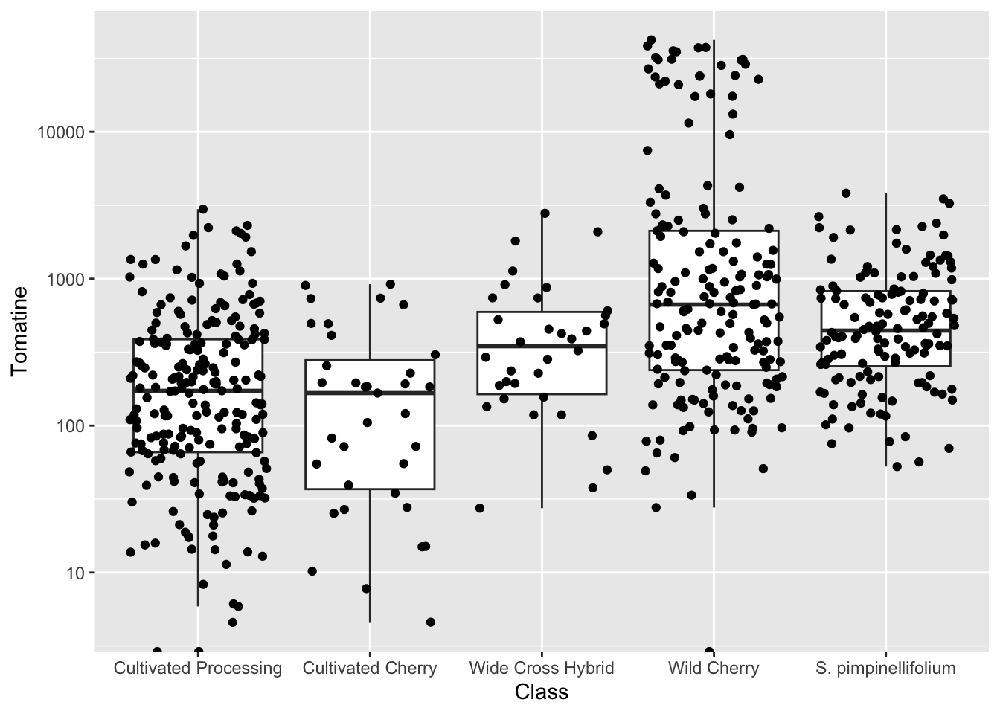

Understanding Data Distributions
Week 7
{kind=link}
Introduction
We will will building on our lesson on ggplot101 and ggplot102 which focused on an overall understanding of the grammar of graphics, basic syntax, adding data, aesthetic mappings, geoms, facets, scales, labels, and themes. Today we are going to apply what we learned towards trying to better understanding our underlying data distributions.
Often, we think about figure generation as the last part of the scientific process, something you do as you prepare a manuscript for publication. I hope to convince you that exploring your data, and making exploratory plots is a critical part of the data analysis and interpretation process.

Load libraries and data
Before we get started, let’s load our libraries.
library(tidyverse)Today we are using real research data from my group. We will be reading in the supplementary data from a paper written by Michael Dzakovich, and published in The Plant Genome. The data is present in a Excel worksheet, so we will use the function read_excel() from the tidyverse (but not core tidyverse) package readxl. We want to import Supplemental Table 1. You can indicate which sheet you want to import in the arguments to read_excel().
alkaloids <- readxl::read_excel("tpg220192-sup-0002-supmat.xlsx",
sheet = "S1 Raw Data Diversity Panel")knitr::kable(head(alkaloids))| ID | Year | Environment | Block | Genotype | Plot_Source | Class | Origin | Provence | Blanca_Cluster1 | Blanca_Cluster2 | Passport_Species | Passport_Classification | Sim_Grouping | Latitude | Longitude | Dehydrotomatidine | Tomatidine | Dehydrotomatine1 | Dehydrotomatine2 | TotalDehydrotomatine | Tomatine | Hydroxytomatine1 | Hydroxytomatine2 | Hydroxytomatine3 | Hydroxytomatine4 | TotalHydroxytomatine | Acetoxytomatine1 | Acetoxytomatine2 | Acetoxytomatine3 | TotalAcetoxytomatine | DehydrolycoperosideFGdehydroesculeosideA | LycoperosideFGEsculeosideA1 | LycoperosideFGEsculeosideA2 | TotalLycoperosideFGEsculeosideA | EsculeosideB1 | EsculeosideB2 | EsculeosideB3 | TotalEsculeosideB | Total |
|---|---|---|---|---|---|---|---|---|---|---|---|---|---|---|---|---|---|---|---|---|---|---|---|---|---|---|---|---|---|---|---|---|---|---|---|---|---|---|---|
| 7805 | 2018 | FreEarly18 | 1 | CULBPT_05_11 | 2K17-7724 | Cultivated Processing | USA | NY | SLL_processing_2 | SLL_processing_2 | SLL | SLL_processing_NY | Arid | 40.712800000000001 | -74.006 | 0.000000 | 0.000000 | 5.726010 | 0.350331 | 6.076341 | 172.66244 | 1.079190 | 86.72742 | 17.831892 | 9.142607 | 114.78111 | 18.902399 | 56.307182 | 1.890053 | 77.099634 | 5.125904 | 10.277325 | 336.8893 | 347.1666 | 3.787979 | 0.924195 | 3.943230 | 8.655404 | 731.5675 |
| 7898 | 2017 | Fre17 | 2 | CULBPT_05_11 | 2K9-8584 | Cultivated Processing | USA | NY | SLL_processing_2 | SLL_processing_2 | SLL | SLL_processing_NY | Arid | 40.712800000000001 | -74.006 | 0.000000 | 0.169068 | 0.000000 | 0.000000 | 0.000000 | 55.47329 | 0.000000 | 53.32292 | 13.630697 | 4.841762 | 71.79538 | 3.557348 | 4.107289 | 0.000000 | 7.664637 | 2.905500 | 5.548102 | 199.6694 | 205.2175 | 8.978931 | 1.897850 | 6.794690 | 17.671471 | 360.8969 |
| 7523 | 2018 | FreLate18 | 2 | CULBPT_05_11 | 2K17-7724 | Cultivated Processing | USA | NY | SLL_processing_2 | SLL_processing_2 | SLL | SLL_processing_NY | Arid | 40.712800000000001 | -74.006 | 0.135675 | 0.680554 | 5.073552 | 0.000000 | 5.073552 | 123.85835 | 0.000000 | 50.90989 | 6.503939 | 1.368847 | 58.78268 | 3.931461 | 4.123222 | 0.623340 | 8.678023 | 2.185082 | 5.104115 | 259.0177 | 264.1218 | 4.049145 | 0.000000 | 6.749386 | 10.798531 | 474.3143 |
| 7724 | 2017 | Fre17 | 1 | CULBPT_05_11 | 2K9-8584 | Cultivated Processing | USA | NY | SLL_processing_2 | SLL_processing_2 | SLL | SLL_processing_NY | Arid | 40.712800000000001 | -74.006 | 0.054300 | 0.497261 | 19.419087 | 0.000000 | 19.419087 | 239.01264 | 0.000000 | 36.02318 | 8.557673 | 7.483933 | 52.06478 | 3.341048 | 16.415426 | 1.057100 | 20.813574 | 0.000000 | 0.000000 | 203.0061 | 203.0061 | 1.678210 | 0.000000 | 2.349633 | 4.027843 | 538.8955 |
| 7427 | 2018 | FreLate18 | 1 | CULBPT_05_11 | 2K17-7724 | Cultivated Processing | USA | NY | SLL_processing_2 | SLL_processing_2 | SLL | SLL_processing_NY | Arid | 40.712800000000001 | -74.006 | 0.139454 | 0.553801 | 0.000000 | 0.000000 | 0.000000 | 64.31783 | 0.879435 | 39.91027 | 7.228388 | 3.015298 | 51.03339 | 0.000000 | 3.131685 | 0.000000 | 3.131685 | 0.000000 | 4.054211 | 299.5687 | 303.6229 | 10.146857 | 0.000000 | 4.882339 | 15.029197 | 437.8283 |
| 7854 | 2018 | FreEarly18 | 2 | CULBPT_05_11 | 2K17-7724 | Cultivated Processing | USA | NY | SLL_processing_2 | SLL_processing_2 | SLL | SLL_processing_NY | Arid | 40.712800000000001 | -74.006 | 0.049700 | 0.262174 | 3.737579 | 0.000000 | 3.737579 | 68.44913 | 0.000000 | 23.86864 | 13.506299 | 1.456982 | 38.83192 | 4.657902 | 4.259007 | 0.605729 | 9.522638 | 9.832149 | 11.595595 | 459.5205 | 471.1161 | 6.839930 | 0.486236 | 5.595751 | 12.921917 | 614.7233 |
This dataset has 605 observations, with data about different steroidal alkaloids in the fruits of different tomato germplasm grown in 3 locations across 2 years. There is also some other metadata too.
Geoms for distributions
geom_col()
Often, people use bar charts, representing the height or the length of the bar as proportional to the average value that it represents. These charts are sometimes called dynamite plots because they resemble (when they have an error bar with whisker) those cartoon style dynamite sticks. Pow!
However, these bar charts, even if you add a standard deviation/error, really can hide the true distribution of your data, and for this reason, I and others hope you don’t select to make them.
Aside: You may be thinking “Jess you asked us to make one of these in Module 2 homework” and I did but also that was a little different. The plot I asked you to make shows the number of degrees awarded, a value for which there really is no distribution. So in that case we are using a bar plot to show something different than a bar plot which is meant to show somehow an average/median and distribution.
I hope after today, you see that there is always a better chart type to make than a bar chart. But I will show you how to make them anyway.
Before we plot, let’s calculate some summary statistics so we know what we should expect.
alkaloids %>%
group_by(Class) %>%
summarize(mean_tomatine = mean(Tomatine))# A tibble: 5 × 2
Class mean_tomatine
<chr> <dbl>
1 Cultivated Cherry 235.
2 Cultivated Processing 330.
3 S. pimpinellifolium 685.
4 Wide Cross Hybrid 534.
5 Wild Cherry 4928.# this is wrong but an easy mistake to make
# this is not what we want
alkaloids %>%
ggplot(aes(x = Class, y = Tomatine)) +
geom_col()Just calling geom_col() does not give us what we want. Look at the y-axis scale and how out of line this is with our summary statistics. The reason for this is that geom_col() defaults to position = "stack" which will just sum the alkaloid content across all the observations. Even changing to position = "identity" does not work. This is because we are plotting a transformation of the data (calculation of the mean) which these geoms are not doing.
We can calculate manually by generating the summary values and then piping that into our ggplot call.
alkaloids %>%
group_by(Class) %>%
summarize(mean_tomatine = mean(Tomatine)) %>%
ggplot(aes(x = Class, y = mean_tomatine)) +
geom_col()stat_summary()
An easier way to do this would be just with stat_summary(), which does not require the calculation of summary statistic first.
alkaloids %>%
ggplot(aes(x = Class, y = Tomatine)) +
stat_summary(fun = "mean", geom = "bar")Reordering x-variables
Note in these plots the ordering of the x-axis categories – they are alphabetical. This is the ggplot default. There are many reasons why this might not be the most compelling ordering for your data. You may want to order from lowest to highest mean, or in this case, I want to order the tomatoes from most cultivated on the left, to most wild on the right, since this is the prevailing theme of our paper.
We can do this in two ways:
Simply reorder the plot.
# set what the order is
alkaloids_order <- c("Cultivated Processing",
"Cultivated Cherry",
"Wide Cross Hybrid",
"Wild Cherry",
"S. pimpinellifolium")
# plot and re-level within aes()
alkaloids %>%
ggplot(aes(x = factor(Class, levels = alkaloids_order), y = Tomatine)) +
stat_summary(fun = "mean", geom = "bar")Change the levels of the data so the reordering happens to every plot in the future.
# what type of variable is Class?
class(alkaloids$Class)[1] "character"# convert to factor, and set levels
alkaloids$Class <- factor(alkaloids$Class,
levels = c("Cultivated Processing",
"Cultivated Cherry",
"Wide Cross Hybrid",
"Wild Cherry",
"S. pimpinellifolium"))alkaloids %>%
ggplot(aes(x = Class, y = Tomatine)) +
stat_summary(fun = "mean", geom = "bar")My tendency would be to re-level the data if I always want to use the same order, and just re-level the plot if I only want to do this once or twice.
geom_boxplot()
A boxplot has the benefit of showing you more than the median and the standard deviation, so you can better see the true distribution of your data. In geom_boxplot():
- lower whisker = smallest observation greater than or equal to lower hinge - 1.5 * IQR
- lower hinge/bottom line of box part of boxplot = 25% quantile
- middle = median, 50% quantile
- upper hinge/top line of box part of boxplot = 75% quantile
- upper whisker = largest observation less than or equal to upper hinge + 1.5 * IQR
alkaloids %>%
ggplot(aes(x = Class, y = Tomatine)) +
geom_boxplot()One reason why this is really importantly different from the bar plot is look at the number of outliers we are seeing for Wild Cherry. You don’t capture this at all with the median/mean bar plots.
Because of the scale of this data, it might be beneficial to log transform the y-axis.
alkaloids %>%
ggplot(aes(x = Class, y = Tomatine)) +
geom_boxplot() +
scale_y_continuous(trans = "log10") # or scale_y_log10()Warning: Transformation introduced infinite values in continuous y-axisWarning: Removed 3 rows containing non-finite values (`stat_boxplot()`).geom_jitter()
geom_jitter() is a shortcut for geom_point(position = "jitter"), but is common enough that the shortcut exists. It is often nice to jitter on top of a boxplot. Note, if you don’t want the outliers from geom_boxplot() to be plotted twice, you should indicate outlier.shape = NA.
alkaloids %>%
ggplot(aes(x = Class, y = Tomatine)) +
geom_boxplot(outlier.shape = NA) +
geom_jitter() +
scale_y_continuous(trans = "log10") # or scale_y_log10()Warning: Transformation introduced infinite values in continuous y-axis
Transformation introduced infinite values in continuous y-axisWarning: Removed 3 rows containing non-finite values (`stat_boxplot()`).
Jittering introduces a small amount of variation into your points so they’re easier to see. A width of 0 is no horizontal jitter. A height of 0 is no vertical jitter. Typically you don’t want veritcal jitter so that the points retain their fidelity on the y-axis (which is where their concentration is plotted). I basically always use geom_jitter(height = 0) for plots where I want to retain y-axis fidelity.
alkaloids %>%
ggplot(aes(x = Class, y = Tomatine)) +
geom_boxplot(outlier.shape = NA) +
geom_jitter(height = 0) +
scale_y_continuous(trans = "log10") # or scale_y_log10()Warning: Transformation introduced infinite values in continuous y-axis
Transformation introduced infinite values in continuous y-axisWarning: Removed 3 rows containing non-finite values (`stat_boxplot()`).
geom_histogram()
We could also look at these distribution more like histograms and it provides to us some additional information. When coupled with faceting, this can be very powerful.
alkaloids %>%
ggplot(aes(x = Tomatine)) +
geom_histogram(bins = 75) + # default is bins = 30
scale_x_continuous(trans = "log10") +
facet_wrap(vars(Class))alkaloids %>%
ggplot(aes(x = Tomatine)) +
geom_density() +
scale_x_continuous(trans = "log10") +
facet_wrap(vars(Class))gg:ridges::geom_density_ridges()
I really like the function geom_density_ridges() which is a part of the ggplot add-on package ggridges. It allows you to create ridgeline plots to show distributes in a single non-faceted plot.
library(ggridges) # for ridgeline plots
library(scales) # for comma format
alkaloids %>%
filter(Tomatine != 0) %>%
ggplot(aes(x = Tomatine, y = Class)) +
geom_density_ridges(alpha = 0.5) +
scale_x_continuous(trans = "log10", labels = comma) +
labs(x = "Alpha-tomatine content, µg/100g fresh weight",
y = "",
title = "Distribution of Alpha-Tomatine Content Across 107 Accessions \nof Tomato Grown Across 3 Environments")You can also use the function geom_density_ridges() which will allow you to easily map quantiles or other functions on top of your ridges.
alkaloids %>%
filter(Tomatine != 0) %>%
ggplot(aes(x = Tomatine, y = Class)) +
stat_density_ridges(alpha = 0.5,
quantile_lines = TRUE,
quantiles = 2) + # break into 2 groups, therefore median
scale_x_continuous(trans = "log10", labels = comma) +
labs(x = "Alpha-tomatine content, µg/100g fresh weight",
y = "",
title = "Distribution of Alpha-Tomatine Content Across 107 Accessions \nof Tomato Grown Across 3 Environments",
caption = "Black line represents tomato class median concent")Picking joint bandwidth of 0.198Warning: Using the `size` aesthetic with geom_segment was deprecated in ggplot2 3.4.0.
ℹ Please use the `linewidth` aesthetic instead.Changing class labels
I am bothered by the fact that S. pimpinellifolium (a species of wild tomato) is not indicated in italics. We don’t want to italicize all of the labels, just S. pimpinellifolium. Let’s fix that.
We can start by creating a vector of the labels how we want them to appear in the plot.
class_labels <- c("Cultivated Processing",
"Cultivated Cherry",
"Wide Cross Hybrid",
"Wild Cherry",
expression(italic("S. pimpinellifolium")))
class_labelsexpression("Cultivated Processing", "Cultivated Cherry", "Wide Cross Hybrid",
"Wild Cherry", italic("S. pimpinellifolium"))Then we can use one of the scale_*() functions to change our y-axis scale labels to how we want them to be.
alkaloids %>%
filter(Tomatine != 0) %>%
ggplot(aes(x = Tomatine, y = Class)) +
geom_density_ridges(alpha = 0.5) +
scale_x_continuous(trans = "log10", labels = comma) +
scale_y_discrete(labels = class_labels) +
labs(x = "Alpha-tomatine content, µg/100g fresh weight",
y = "",
title = "Distribution of Alpha-Tomatine Content Across 107 Accessions \nof Tomato Grown Across 3 Environments")Picking joint bandwidth of 0.198If for example your variables were mapped to color or fill, you could do this using scale_color_manual() or scale_fill_manual(), respectively.
ggdist functions
Another ggplot extension package ggdist has cool geoms you can integrate into ggplots to visualize distributions. I think these work better than geom_dotplot().
Sometimes using geom_jitter() when you have a lot of data points can look a bit messy. I think in this case, using geom_dots() works very well. The default orientation is is layout = "bin"
library(ggdist)
Attaching package: 'ggdist'The following objects are masked from 'package:ggridges':
scale_point_color_continuous, scale_point_color_discrete,
scale_point_colour_continuous, scale_point_colour_discrete,
scale_point_fill_continuous, scale_point_fill_discrete,
scale_point_size_continuousalkaloids %>%
filter(Tomatine != 0) %>%
ggplot(aes(x = Tomatine, y = Class)) +
geom_dots() +
scale_x_continuous(trans = "log10", labels = comma) +
scale_y_discrete(labels = class_labels) +
labs(x = "Alpha-tomatine, µg/100 g fresh weight",
y = "",
title = "Distribution of alkaloid content found among \ntomatoes of different classes")
You can really change the feel of the plot by changing the orientation between horizontal and vertical. If you want to use the orientation layout = "swarm" you need the package ggbeeswarm. This is also a nice package that performs similarly to ggdist but has less functionality which is why I’m covering ggdist here.
library(ggbeeswarm) # required for layout = "swarm"
alkaloids %>%
filter(Tomatine != 0) %>%
ggplot(aes(x = Class, y = Tomatine)) +
geom_dots(side = "both", layout = "swarm") + # requires ggbeeswarm
scale_x_discrete(labels = class_labels) +
scale_y_continuous(trans = "log10", labels = comma) +
labs(x = "",
y = "Alpha-tomatine, µg/100 g fresh weight",
title = "Distribution of alkaloid content found among tomatoes of different classes")
You can also use stat_dotsinterval() which will by default add the median and the interquartile range (though you can change exactly what you want to be displayed).
alkaloids %>%
filter(Tomatine != 0) %>%
ggplot(aes(x = Class, y = Tomatine)) +
stat_dotsinterval(side = "both") +
scale_x_discrete(labels = class_labels) +
scale_y_continuous(trans = "log10", labels = comma) +
labs(x = "",
y = "Alpha-tomatine, µg/100 g fresh weight",
title = "Distribution of alkaloid content found among tomatoes of different classes")
Don’t forget we can keep layering. We can always map other aethetics to our plot (e.g. shape = as.factor(Year), and we include as.factor() because Year is a character datatype).
alkaloids %>%
filter(Tomatine != 0) %>%
ggplot(aes(x = Class, y = Tomatine, shape = as.factor(Year))) +
scale_y_continuous(trans = "log10", labels = comma) +
geom_dots(side = "both") +
theme_ggdist() +
theme(legend.position = c(.18, .99),
legend.justification = c("right", "top"),
legend.box.just = "right",
legend.box.background = element_rect(color = "black"),
legend.box.margin = margin(5, 5, 5, 5)) +
labs(shape = "Year",
y = "Alpha-tomatine (µg/100 g fresh weight)")